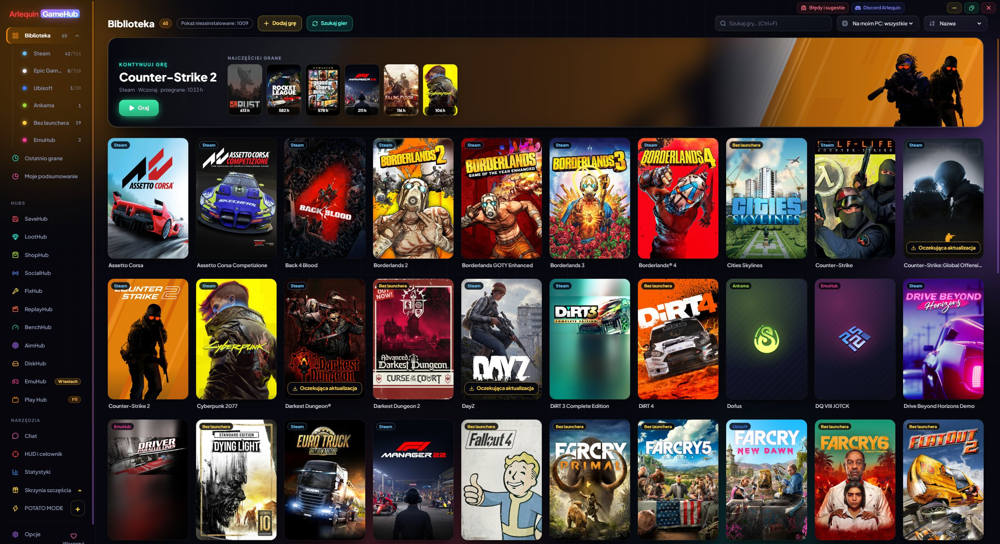

Cała twoja biblioteka w jednym miejscu
Steam, Epic, GOG, Xbox, Ubisoft, EA, Battle.net, Amazon, Rockstar i gry bez launchera, razem.
GameHub patrzy na to, co już masz na komputerze: foldery i pliki, które przechowuje launcher każdego sklepu. Dzięki temu znajduje zainstalowane gry, a także te, które posiadasz, ale nie zainstalowałeś, z okładkami i godzinami, które przegrałeś. Godziny są liczone, nawet jeśli otwierasz grę z jej własnego launchera.
W panelu bocznym kliknięcie Biblioteka otwiera twoje sklepy z liczbą gier w każdym (także te, których aplikacja jest zainstalowana, choć nie mają jeszcze gier). Możesz sortować według nazwy, ostatniej gry, godzin lub rozmiaru, wyszukiwać błyskawicznie i zobaczyć, w co grałeś ostatnio.
Gry bez launchera (emulator, gra z itch.io…) dodajesz przyciskiem „Dodaj grę” albo mówisz GameHub, w których folderach trzymasz luźne gry, a on sam je znajdzie. Szuka oficjalnej okładki ze Steam także dla gier z innych sklepów, dodanych ręcznie lub wycofanych ze sklepu; jeśli jej nie ma, używa ikony gry, a zawsze możesz ustawić własny obrazek.
Gra, którą masz w kilku sklepach lub w tym samym folderze, pojawia się tylko raz. A jeśli Steam aktualizuje grę, widzisz to na jej karcie („Aktualizacja 45%” lub „Aktualizacja oczekuje”).
Aktualizacje Steam i pobierania Epic (instalacja lub aktualizacja) pokazują prawdziwy %, prędkość i pozostały czas na dole karty, tam gdzie zwykle jest „Graj”; kliknięcie otwiera Steam lub Epic. Jeśli pobieranie się zatrzyma, pokazuje „Wstrzymano”.
Nowe sklepy: Riot (League of Legends, VALORANT, TFT…), HoYoPlay (Genshin, Star Rail, Zenless…), Wargaming (World of Tanks…), Ankama (Dofus, Wakfu…) i Gameforge (Metin2, NosTale…), z godzinami każdej postaci w Dofus. Gry konsolowe z GOG Galaxy (PlayStation, Nintendo) mają własną sekcję i można je ukryć, a w Opcje → Biblioteka możesz usunąć sklepy, których nie chcesz, i wybrać ich kolejność w panelu bocznym.
Jeśli prześlizgnie się coś, co nie jest grą (program, serwer…), usuwasz to i GameHub się uczy. Możesz to przywrócić w Opcje → Biblioteka.
Nigdy nie prosi o hasło do żadnego sklepu: żeby zagrać, otwiera każdą grę jej własnym launcherem, tak jakbyś otworzył ją sam.
Twoje gry z Xbox / Microsoft Store i Ubisoft pojawiają się, nawet jeśli nie są zainstalowane, a gry z Game Pass można ukryć. Serie są sortowane według daty premiery, a okładki i tła zapisują się na twoim komputerze: pojawiają się natychmiast, nawet offline.
Jak z tego korzystać
- Otwórz i poczekaj kilka sekund: twoje gry pojawią się same.
- Dwukrotne kliknięcie lub przycisk „Graj” (pod okładką), by otworzyć grę.
- „Pokaż N niezainstalowanych” pokazuje także te, których nie zainstalowałeś.
- „Szukaj gier” od razu ponownie sprawdza twoje sklepy.
- Postacie z Dofus są przypisane do serwera: gdy zamkniesz grę, GameHub sam ustala, na którym grałeś, albo cię o to pyta, karty są grupowane według serwera i możesz przenieść godziny na inny serwer.

Chcesz spróbować?
⬇ Pobierz bezpośrednio 🛍️ Pobierz ze sklepu Microsoft StoreWindows 10 i 11 (64-bit) · Za darmo · Aktualizuje się sam